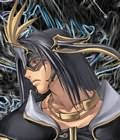

Forums galactiques > Taverne galactique : lieu de discussion informel > Description de votre personnage
| Horohoro Réputation à la taverne : 1130  31/08 ETU 17:30 | Score : 3 Détails je vous propose ici de décrire le personnage que vous jouez sous toutes ses coutures,un peu comme une fiche d'état civil^^ voici le formulaire,je commence.
Nom:Amano Prénom:Horohoro Surnom:l'Empereur de la Foudre Age:14 Race:Guerrier des glaces,dieu (?) Titre:Ex-Roi des Glaces Couleur des yeux:bruns,bleus transparents en berserk Couleur des cheveux:Bruns Taille:1 M 69 Poids:56 Kg Habits: -Un débardeur avec une fermeture éclair au milieu,avec des replis oranges -Un pantalon Baggy noir bourré de poches -Chaussures de sport équipées d'aéroglisseurs Accessoires: -8 anneaux aux mains -une couronne en or sur le front Armes: -Bâton Magique Nyoïbo -Sabre de Saphir Pouvoirs: -les 8 éléments -Téléportation style de combat:Tao Voilà.A vous de jouer! | ||
| Blackwarrior Réputation à la taverne : 476  31/08 ETU 17:44 | Score : 2 Détails Pas de prob:
Nom: (aucun je suis un démon) Prénom: Rekhyt (peu usité...) Surnom: Blackwariror ou Blacky Age: vraiment très vieux par rapport à une vie humaine extrêmement longue Race: Démon de classe supérieur, 5000 ans de vie terrestre. Titre: (aucun) Couleur des yeux: marron Couleur des cheveux: Bruns Taille:1 M 84 Poids: 60 Kg Habits: -plastron de tissu sur le torse -Un pantalon Baggy noir -Chaussures de sport dernière génération Accessoires: -bague contenant la cendre de mes ancêtres (sentimental, donc pas de pouvoir notoire...) -amulette de téléportation des colonies zabrak Armes: -Sabre d'Emeraude, forgé avec l'âme de ses victimes, au nombre de 7, trempé dans du sang de licorne à 3 têtes, qui lui a donné cet aspet luisant... -mains (ayant été uinitié aux arts martiaux japonais, mes mains peuvent broyer presque tout et effectuer des mouvements d'une extrême rapidité...) Pouvoirs: -boules en tout genre (feu, energie, eau, ...) -vision nocturne et rayons x (comme tout démon qui se respecte) pouvoir spécial: - peut aspirer l'energie de n'importe qui ou n'importe quoi (due à ma classe supérieur) caracteristique spéciale: -reflexes de combats rapides (dû à mon entraînement) | ||
| Abbadon Réputation à la taverne : 225  31/08 ETU 17:45 | Score : 2 Détails Très bonne initiative.
Nom: Abbadon, ou Appolyon selon un langage de l'ancien temps. Titre: Archange de l'abîme, Seigneur du puit sans fond, Prince démon de septième hierarchie. Age: Aucun et tous. Suivant l'espace-temps, mais toujours depuis que la pensée est apparue. Race: N'existe que par la pensée. Yeux, cheveux: suivant l'espace temps. Yeux bleus et cheveux jais dans celui ci. Taille: 1,97 m ETU Poids: 102 kg ETU Habits: Une cape d'obscurité, faite d'espaces-temps entremélés. Permet la téléportation. Une armure de plates en adamantite, de couleur noire et rouge. Un gambison de peau. Une cotte de maille. Des capes de fourrure. Couronne de psychée. Le collier buveur d'ames. Equipement: Sceptre du mal universel. Traité du nécronomicon et du pyromantium. Ultimecon arcanium. Armes: Absael, la flamboyante, buveuse d'ame, tueuse d'ange, la noire vengeresse. Le katana Armythion, splendeur du mal, joyau d'obsidienne. Faucheur, le fléau de la désolation, et Chartreuse, Hache de toutes les souffrances. Pouvoir: Téléportation, Contact maléfique, Danselame, Rage fulgurante. Style de combat: kung-fu, taekwondo, comabat à la lame médiéval, escrime, et puis des gros coup de bourrin quoi! HRP: Horo je crois que tu as oublié la rage berzerk. tu dis que tu as les yeux bleus quand tu est berzerk, donc tu dois avoir la rage berzerk?! | ||
| Horohoro Réputation à la taverne : 1130 31/08 ETU 17:48 | Score : 0 Détails HRP:c'est à dire?c'est pas une technique c'est quand j'enlève ma couronne...
un ptit oubli rectifié:mettez votre style de combat,les gars! (par ex. IRL:karaté,etc.) | ||
| khalim Réputation à la taverne : 488  31/08 ETU 18:11 | Score : 2 Détails why not...
Nom: Khli prénom: Khalim Age: 125 Race: Humain cheveux: châtains, coiffés en dreadlocks yeux: bleus foncés depuis la fusion avec le talisman du Père Dragon. Une ligne bleue les traverse horizontalement Taille: 1,85m Poids: 70 kg Habits: -décontractés... la plupart du temps, chemise et jean... accessoires: -Pas vraiment d'accessoires, le talisman du père dragon s'est enfoncé en lui, et a fusionné avec Khalim... Armes: -Luna Crescens Iridensis, la faux de Hécate, qu'elle m'a donnée il y a un moment. -Al-Batr, la Batailleuse, l'épée de Mahomet. Vieille de plusieurs milliers d'année, certains croient que c'est avec cette arme qu'un certain Jésus combattra l'Antéchrist lors de la fin des temps. Pouvoir: -Téléportation -voyage temporel -Luna Crescens permet à Khalim de rester en contact avec Hécate. Elle lui permet aussi de créer des portails vers d'autres lieux. -Il arrive au Père Dragon de se manifester sous forme d'un corps astral lorsqu'en contact avec une puissante magie étrangère. -Sous l'effet de la colère, et parfois volontairement, Khalim peut se transformer en homme-dragon. Sa force, sa vitesse et ses réflexes sont décuplés et des ailes immenses lui permettent de voler. 0Grâce à Luna Crescens, il peut, sans avoir à se transformer complètement, faire pousser deux ailes reptiliennes argentées. Style de combat: *À mains nues: -Capoeira, style de combat acrobatique nécessitant beaucoup de souplesse et de force. Surtout des coups de pieds. *À l'épée: -Danse du Dragon. Ce style de combat a été créé afin de permettre aux chasseurs de dragons de tuer à l'aide d'armes blanches les dragons et plus généralement les créatures plus grandes possédant plus de membres que les humains. Les plus grands maitres (Khalim n'est encore qu'un apprenti de classe 5), peuvent faire des bonds de plus de vingt mètres. Le record de Khalim est de sept mètres. L'apprentissage est extrèmement long et fatiguant. | ||
| Ash Réputation à la taverne : 434  31/08 ETU 18:54 | Score : 1 Détails Nom:Morpheus
Prénom:Ash Surnom: Fire Warrior Age: 42 Race: Atreem Titre: Successeur au trone d'Atrea Couleur des yeux: Bruns, orange en colere Couleur des cheveux: Bruns, verts des fois... Taille: 1 M 84 (je fais le perso faire ma taille et mon poids :P) Poids: 70 Kg Habits: Un habit blanc et noir, avec des reflets argentes sur les cotes. Deux epaulieres noires avec des traits rouges dessus. Un long pantalon noir, en tissus plutot fin, mais pourtant resistant. Il a un bandeau sur l'oeil droit, et a une sort d'echarpe de 3 metres autour du cou, dont 1 metre depasse de chaque cote. Accessoires: - 1 gourde d'eau de 10 mL - Un bandeau rouge attache au bras droit Armes: - Arkange, epee forgee de rubis et d'oblivion - Son couteau de poche Pouvoirs: - Aura de feu - Cendres du mont d'Azor lui donnant de nombreux pouvoirs, tels que la teleportation et aussi le pouvoir de creer quelques clones. Aussi celui d'augmenter la force de son Aura. style de combat: Harmonixer (le fait d'utiliser son pouvoir spirituel et aussi de fusionner avec des ames)(Peut aussi transformer son pouvoir spirituel en force physique pure) Sinon on peut appeler ca un sorte de Shoalin P.S. On pourrait aussi mettre l'histoire non? | ||
| KURT Réputation à la taverne : 377  31/08 ETU 18:56 | Score : 0 Détails Nom: Khameer
Prenom: Zarin Surnom: KURT Age: 26 | ||
| Abbadon Réputation à la taverne : 225 31/08 ETU 18:57 | Score : 0 Détails Un peu plus complet serai mieux
Ah ben voila a defaut d'etre original, mais c'est pas grave, c'est complet! Youpi aie! | ||
| KURT Réputation à la taverne : 377 31/08 ETU 19:01 | Score : 1 Détails Race: Zabrak
Couleur des yeux: jaune-orange Pas de cheuveux mais des cornes Poid: 82kg Habits: grand manteau noir Armes: sabre laser double Pouvoirs: la force Tactique de combat: Jedi Planète natale: Iridonia | ||
| KURT Réputation à la taverne : 377 31/08 ETU 19:03 | Score : -2 Détails Desolé je fais par morçeaux./HRP/comme un c** j' ai mis valider
| ||
| Caporal Atmos Réputation à la taverne : 109  31/08 ETU 19:10 | Score : 0 Détails Nom:(inconnu)
Prénom:Atmos Surnom:Atmos ou Atmy Age:si mes calculent sont bon, environ 40ans(vie militaire Kratchienne= + 10 000ans de vie humaine) Race:Guerrier intergalactique retraité mais avec une reprise de service. Titre:Caporal Couleur des yeux:rouge sang Couleur des cheveux:noir nuit Taille:2m Poids:130Kg de muscle Habits: -uniforme militaire rouge sang et noir Accessoires: -médailles -galons Armes: -épée en fusion -colt plasma -lanceur de bisounours Pouvoirs: -Télékinésie -strangulation suivie de la mort par le mentale style de combat:Arts martieaux | ||
| Ramuh Réputation à la taverne : 25  31/08 ETU 19:23 | Score : 0 Détails Nom:Ramuh
Prénom: Surnom:Ramuh Age:170, et oui pas trop jeune Race:Magicien Titre:Commandant de l'empire d'Elektrica Couleur des yeux: bleus Couleur des cheveux: Blonds mais ils blanchissent peu à peu Taille:1 M 80 Poids:88 Kg Habits:Robe de combat renforcée Armes: Baton de mage muni de lames sur l'extremité Pouvoirs: Appel de la foudre Champ de force | ||
| Naruse Réputation à la taverne : 1178  31/08 ETU 19:23 | Score : 0 Détails (pourquoi pas...)
Nom : Naruse Prénom : Ein Surnom : Maître des Illusions Age : 227 ans Race : Mayar, fils des Valars Titre : Commandant Suprême des forces armées Mayars Yeux : rouges écarlates Cheveux : blancs, très blancs Taille : 2m50 Poids : 250 Kg (à cause de l'armure^^, il ne l'enlève que très rarement^^) Habits : armure très épaisse rouge, ornée de décoration diverses. Accessoires : deux anneaux. Un de pouvoir, l'autre sentimental Armes : deux sabres. Le No-Dachi appelé Musashi, et le Katana appelé Masamune Pouvoirs : maitrise les illusions, ainsi que la flamme sacrée d'Odun. Style de combat : ça serait trop long^^. Et je ne dévoile pas mes secrets. (en fait j'ai surtout la flemme d'en faire la liste) | ||
| valdred Réputation à la taverne : 105  31/08 ETU 19:28  | Score : 0 Détails Nom: Edren
prénom: Valdred surnom: vald titre: empeureur de daranne Age: 666 Race: démon archaique cheveux: blanc yeux: gris Taille: 2,02 m Poids: 80 kg Habits: robe noire et plastron gris accessoires: Bracelet de pouvoir des acrios Armes: Arc d'ombre 2 katana d'acrios, sabre élémentals Pouvoir: -maitrise élémental Style de combat: arts martiaux aussi bien katana que main nue | ||
| capitaine Bleuteun Réputation à la taverne : -16  31/08 ETU 19:40 | Score : 3 Détails Nom:j'vous en pose des question?
Prénom:Bleuteun Surnom:Bleuteun le Bleu(a l'Université uniquement) Âge:34 Race:terrien Titre:commandant du NHL Survivaure Couleur des yeux:complètement noir(y s'est pas fait ch*** le dessinateur) Couleur des cheveux:blond Taille:1m60 Poids:strictement confidentiel Habits: -veste rouge de commandant _ceinture avec compartiments _pantalon plus noir que l'âme d'un démon _chaussures derniers modèle, équipé de ventilos(je sus horriblement) Accessoires: -2pisstolets lasers -le grade de capitaine Armes: -2pisstolets lasers -le grade de capitaine Pouvoirs: faire pipi debout style de combat:du pète la gueule | ||
| Indiko Réputation à la taverne : 1  31/08 ETU 19:46 | Score : 0 Détails Nom: Indiko Trilius
Titre: Comte Âge: Entre 20 et 30 ans Race: Humanoïde Yeux, cheveux: Noirs Taille: 1,82 m Poids: 86 kg Habits: Une cape sombre, fait de peau de Troll. Une veste noir en tissu. Un collier en or. Des Bottes du même style que la cape. Équipement: Une sacoche en peau de Siple (créature de sa planète, ressemblant à un bélier) Armes: Une Épée en Titane et un Colt Python. Pouvoir: Heu.... aucun, je suis pas un super héros Style de combat: Maniement de l'épée, des armes à feu et en art martiaux | ||
| sezoboss Réputation à la taverne : 84  31/08 ETU 19:54 | Score : 0 Détails Nom:Aldébaran
Prénom:??? Surnom:sezoboss Age:20 ans Race:humain Titre:Chevalier d'or du taureau Couleur des yeux:marrons Couleur des cheveux:noirs Taille:2 M 10 Poids:130 Kg Habits: -Armure d'or -Casque à cornes Armes: -mes poings Pouvoirs: -froce brute -cosmo-énergie technique de combat:Great Horn ( Grande Corne ) | ||
| Anaek Réputation à la taverne : 60  31/08 ETU 20:40 | Score : 0 Détails Nom:Ne s'en souviens pas.
Prénom:Anaek Surnom:bol2riz Age:17 Race:Simple humain Titre:Commandant du clan Ekailien Couleur des yeux:Noir,virant de temps en temps au gris. Couleur des cheveux:Blanc éclatant et pâle Taille:1 M 75 Poids:61 Kg Habits: _Un pull à long col noir. _Un pantalon de tissu noir _Une longue veste un peu queue-de-pie noir. Accessoires: _Le pendentif de sa soeur Anael. Armes: _Revernoire:http://img243.imageshack.us/img243/9756/ma7705nh3.jpg Pouvoirs: _Le Triangle Noir:Mort_Mal_Ténèbres _Force de lumière. (Aucun pouvoir destructif,surpuissant contre les formes de vie et autres formes spirituelles,inutile si il s'agit de défoncer bâtiments,vaisseaux,rocher,pierre...) | ||
| Abbadon Réputation à la taverne : 225 01/09 ETU 09:32 | Score : -1 Détails Faites gaffes tous ceux qui font des démons, je suis un prince démon. Allez toi la apporte des boissons efraiche gnahhh et toi fait moi de l'air. Tititpirulli vous voyez ce que je veux dire?
| ||
| Tdiablo Réputation à la taverne : 59  01/09 ETU 10:30 | Score : 0 Détails Nom: Aucun
Prénom: Tdiablo Surnom: L'ange vengeurs. Age: environs 2000 ans. Race: Ange déchus. Titre: Ancien Ange, Ange bannis des Cieux. Couleur des yeux: Rouge sang. Selon la couleurs du dernier sang qu'il a fait couler. Couleur des cheveux: Noir ténébre Taille: 1M 76 Poids: 66 Kg Habits: -Veste bleu avec des symbole imprimer dessus, une chemise en desous... -Un pantalon Noir avec d'autre symbole imprimer dessus. -Chaussures noir avec des erraflur de sang sur le coter. Accessoires: -Habits permettent de ce controler (spéciallement fait pour controler la colére et l'aura démoniaque de la colére.) Armes: -Aucun Pouvoirs: -Le controle des enfers. -Ouverture de porte vers les enfers et d'autre endroit où Dieux ne peux pas voir. -Peu augmenter sa puissance de son aura en retirer c'est vétement (Déconseiller) -Posibiliter de matérialiser des armes de torture et de souffrances. -Peu tuer des imortelles (ou des Dieux). style de combat: Aucun, attaques aveuglément à cause de sa colére. Vous en penser quoi? |
Forums galactiques > Taverne galactique : lieu de discussion informel > Description de votre personnage